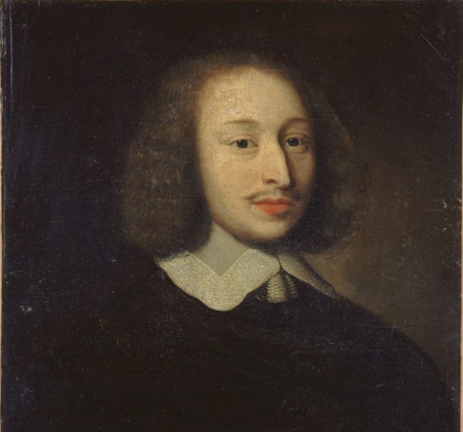

Ley de Probabilidad: 1654
Blaise Pascal Se refiere a un conjunto de principios que describen cómo calcular las probabilidades en situaciones de eventos aleatorios. Pascal estableció la noción de probabilidad en el contexto de juegos de azar. En esencia, esta ley establece que la probabilidad de un evento se puede calcular como el número favorable de resultados dividido entre el total de resultados posibles. La ley de Pascal ayudó a fundar la teoría moderna de probabilidades.
Volver a la página principal